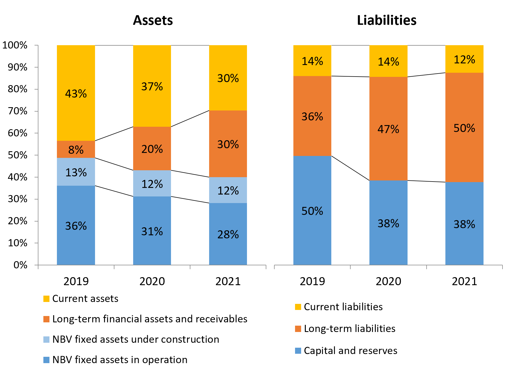
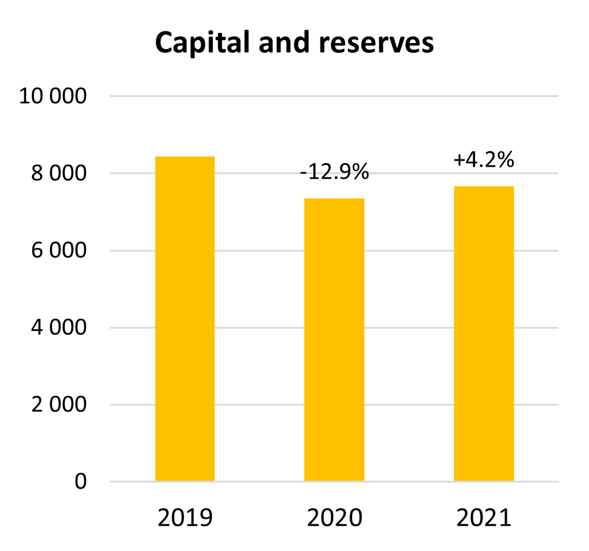
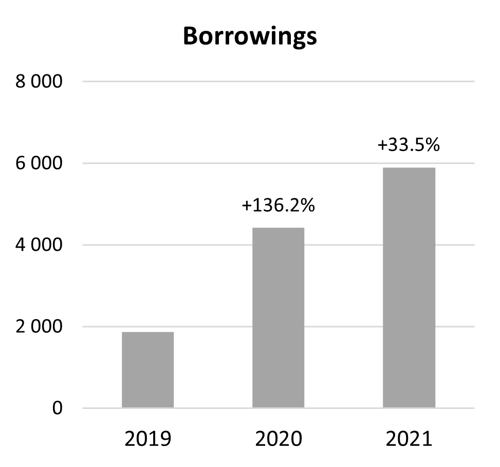
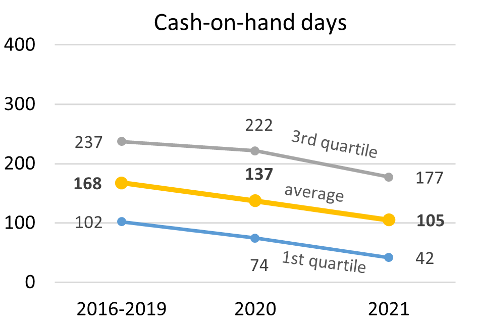

5 ANSPs Cash and Liquidity Issues as a Result of the Covid-19 Pandemic
This chapter provides a preliminary analysis of specific indicators that can be used to monitor potential cash and liquidity issues experienced by ANSPs as a result of the COVID-19 pandemic in 2021 and 2022. Due to specific organisational and financial set up in HASP, LVNL and MUAC, these three ANSPs are excluded from the analysis presented in this chapter.
Figure 5.1 presents the changes in ANSPs balance sheet structure as reported in their ACE data submissions at “Total ANS” level (i.e. en-route, terminal and other ANS). The scope is therefore wider than gate-to-gate ATM/CNS which is used to calculate the other ACE key performance indicators, but depending on what ANSPs include under “Other ANS”, it might not necessarily match with the whole activities of the ANSP.

<<<<<<< HEADFigure 5.2 shows capital and reserves increased by +4.2% in 2022 but remained -€778M lower than in 2019. In the meantime, short and long term borrowings continued to increase (+33.5% in 2022), reaching €5 900M, which is three times higher than in 2019.


In order to assess the impact of the COVID-19 on the ANS industry, the PRC uses indicators aiming at monitoring ANSPs financial situation. For more details on how these indicators have been defined for the purposes of this analysis, along with their limitations, please refer to Section 4.2 of the ACE 2020 report.
Figure 5.3 shows the changes in cash-on-hand days at Pan-European system level over the 2016-2021 period as well as the 1st quartile and the 3rd quartile of these indicators. Cash-on-hand days measures the length of time a company can pay its operating costs from its cash reserves.

<<<<<<< HEADIn 2021, the average cash-on-hand days amounted to 105 days, which is -32 days (or -23%) lower than in 2020 and -62 days (or -37%) lower than over the 2016-2019 period.